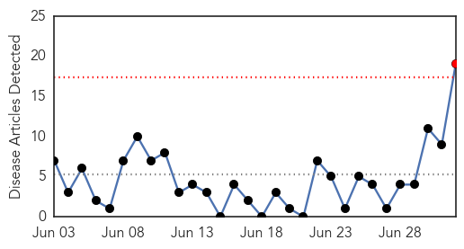
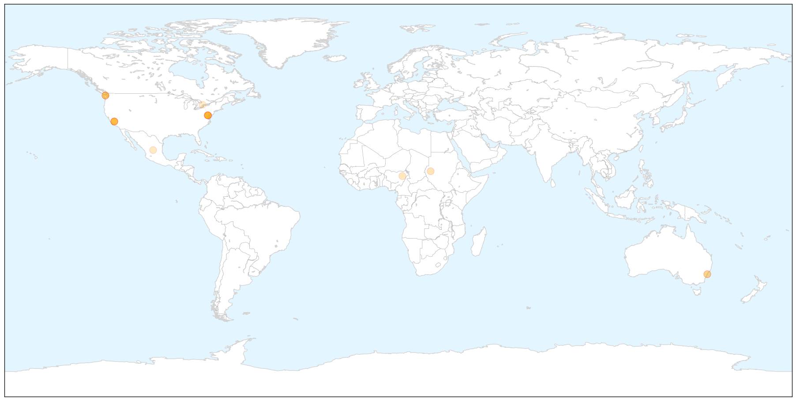
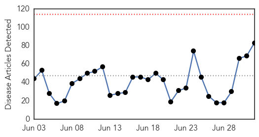
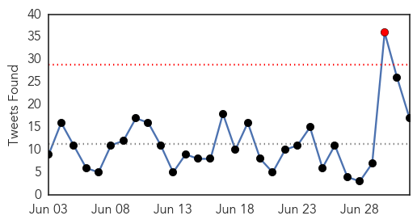
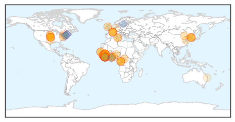
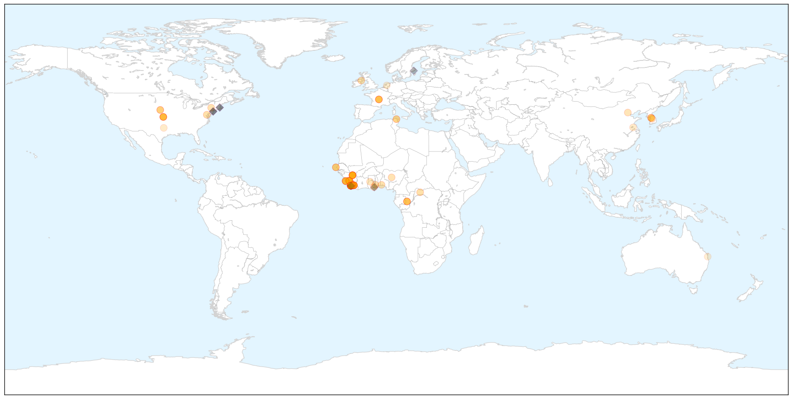

Measles
30-Day Web Trend
1 alerts, 0 warnings

30-Day Twitter Trend
1 alerts, 0 warnings

Article Locations

X

Article Confidences

Top Articles:
- 0.929
- Undetected measles led to death of Clallam County woman in her 20s
- 0.920
- Washington Woman Is First U.S. Measles Death in 12 Years
- 0.885
- Pupils Must Receive Measles Vaccines, US Rulers Have Enacted
- 0.881
- US announces first death from measles in 12 years
- 0.851
- U.S. sees first measles death since 2003
- 0.849
- Woman in Washington died from measles, becoming first U.S. death from disease in 12 years
- 0.841
- Seven women die of measles in Zamzam camp, North Darfur - Sudan
- 0.830
- Washington woman dies of measles; 1st US death since 2003
- 0.824
- US announces first death from measles in 12 years
- 0.798
- Clallam Co. woman dies of measles; 1st US death since 2003
- 0.796
- Washington woman dies of complications from measles
- 0.727
- First person dies of measles in the U.S. since 2003
- 0.722
- Woman's death by measles in Washington state is first in the US since 2003
- 0.668
- State health department reports death of woman from measles, first in U.S. since 2003
- 0.629
- Measles: First death in 12 years reported in Washington state
- 0.576
- Travel vaccines should be covered by OHIP: Toronto Public Health
- 0.547
- Public assured after Sydney dental scare
- 0.547
- Public assured after Sydney dental scare
- 0.547
- Public assured after Sydney dental scare
Top Tweets:
-
No tweets found for Jul 02, 2015
Ebola
30-Day Web Trend
0 alerts, 0 warnings

30-Day Twitter Trend
1 alerts, 0 warnings

Article Locations

X

Article Confidences

Top Articles:
- 1.000
- Liberia investigating animal link after Ebola re-emerges
- 1.000
- FG Calls for Vigilance as Ebola Virus Resurfaces in Liberia, Articles
- 1.000
- UPDATE 3-Liberia investigating animal link after Ebola re-emerges
- 1.000
- Liberia investigating animal link after Ebola re-emerges
- 1.000
- Where Did New Cases Come From?
- 1.000
- Liberia's new Ebola cases rattle neighboring Sierra Leone, Guinea
- 1.000
- Ebola back in Liberia 2 months after being declared free of virus that killed over 11,000
- 1.000
- Ebola in Liberia: Two More Cases Confirmed as Rumors of Second Patient Zero Spread
- 1.000
- Liberia confirms three new Ebola cases, raising fears of remaining hidden pockets of the disease
- 1.000
- Liberia investigating animal link after Ebola re-emerges
- 1.000
- Liberia traces contacts as 3rd case arises from town
- 1.000
- Liberia finds second Ebola case, raising fears of resurgence
- 1.000
- Ebola return in Liberia underscores need for rigorous testing
- 1.000
- Officials in Liberia Say Ebola Has Returned After Teenager Died
- 0.999
- Third New Ebola Case Hits Nation That Only a Few Weeks Ago Declared Relief
- 0.999
- Liberian Ebola aid workers demand hazard pay
- 0.999
- Malaria killed more people than usual in Ebola outbreak
- 0.999
- Liberia announces two more confirmed Ebola cases
- 0.999
- New Ebola cases in Liberia raise fears of fresh outbreak
- 0.999
- Further setback for weary - and shellshocked - Liberia as announces two more confirmed Ebola cases
- 0.999
- Ebola: FG Urges States, Health Facilities To Be On Alert
- 0.998
- Liberia Traces Contacts in 3rd New Ebola Case
- 0.998
- Reflections Of A Grinder
- 0.998
- Kenya : Liberia announces two more confirmed Ebola cases
- 0.998
- 2nd Ebola case declared in Liberia as health workers protest
- 0.998
- Ebola: Two more cases confirmed in Liberia
- 0.998
- 2 New Ebola Cases in Liberia
- 0.998
- Liberia confirms third Ebola case
- 0.998
- 1 dead after Ebola reappears in Liberia
- 0.998
- Kizz MyAnthia Blog Archive The Epidemic May be Over, But Liberia Has New Ebola Cases
- 0.997
- Liberia finds two Ebola cases weeks after being declared free of it
- 0.997
- Liberia confirms third Ebola case
- 0.997
- 2nd Ebola case declared in Liberia as health workers protest
- 0.997
- Liberia confirms third Ebola case
- 0.997
- Liberian leader says new Ebola outbreak can be contained
- 0.996
- HHS Launches National Ebola Training Center -- Occupational Health & Safety
- 0.996
- Ebola in Liberia: Be on alert, FG tells health ministries
- 0.996
- To Protect Liberia’s Borders from Ebola Spill,
- 0.996
- FG urges Vigilance As Ebola Resurfaces In Liberia
- 0.996
- Liberia investigating animal link after Ebola re-emerges
- 0.995
- Congo and WHO investigate possible Ebola outbreak
- 0.994
- Third Ebola case in Liberia.
- 0.994
- Liberia announces fresh Ebola death
- 0.994
- Ebola returns to Liberia weeks after country declared free of virus 02/07/2015
- 0.993
- Liberian Teen Tests Positive For Ebola, More Than 100 Came In Contact
- 0.993
- After Liberia Declared 'Ebola-free,' New Cases Reported
- 0.992
- After Liberia Declared 'Ebola-free,' New Cases Reported
- 0.992
- Congo and WHO investigate possible Ebola outbreak
- 0.991
- Working together against a common enemy
- 0.983
- The Liberian Observer
Showing top 50 articles...
Top Tweets:
- 0.920
- Ebola diaries: Making things work in a desperate situation - World Health Organization http://t.co/KD9IL8BVSg ebola EVD
- 0.905
- .@WHO has very said little about the return of Ebola to Liberia. But clearly taking it seriously - Ebola Emergency Committee convened today
- 0.884
- RT: The Ebola outbreak in West Africa highlighted the crucial frontline role of effective laboratories WHOPanorama http://t.c…
- 0.876
- TWU student is researching Ebola virus - Gainesville Daily Register http://t.co/uFbYUYwkHn ebola EVD
- 0.838
- Liberia fears a new Ebola epidemic after second case is discovered - Quartz http://t.co/kKOcyNUA24 ebola EVD
- 0.824
- Canadian military medical staff end six-month Ebola mission in Sierra Leone - The Province http://t.co/UL32uFpv0T ebola EVD
- 0.823
- RT: New Ebola outbreak has been localized in Nelowehn Community Mamba Kaba District - Nyenswah http://…
- 0.812
- Congo and WHO investigate possible Ebola outbreak - Reuters http://t.co/D1ISEh48Ca ebola EVD
- 0.728
- RT: Liberia was Ebola free for seven weeks on Sunday a teenager died of the virus now two more from his village have it http:/…
- 0.610
- Liberia confirms 2 live Ebola cases both males in their 20s after one death bringing total from new cluster to 3. 175 contacts so far.
- 0.607
- Ebola economy to blame for fewer tourists - News24 http://t.co/QyrocWN78m ebola EVD
- 0.607
- Ebola economy to blame for fewer tourists - News24 http://t.co/AoXyIUHCyE ebola EVD
- 0.601
- There are now two live cases of Ebola in Liberia after Sunday's death. Our updated feature from the affected area: http://t.co/bJ3NeBKGhx
- 0.587
- Viral protein in their sights: Advanced imaging reveals key structure of Ebola . http://t.co/RjkhWvJegp ebola EVD
- 0.560
- .@nprGlobalHealth No. Has issued a release on the Ebola Emergency Committee meeting yet?
- 0.535
- Liberia investigating animal link after Ebola re-emerges - Reuters http://t.co/Ye3wxqsg3o ebola EVD
- 0.502
- Chlorine buckets are reappearing outside shops and homes in Monrovia. People seem intent on vigilance but calm. Liberia Ebola